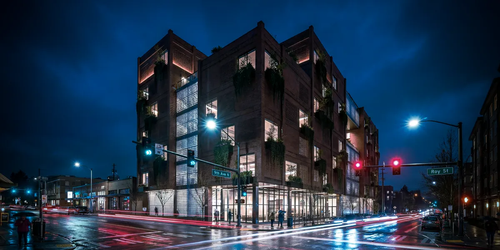
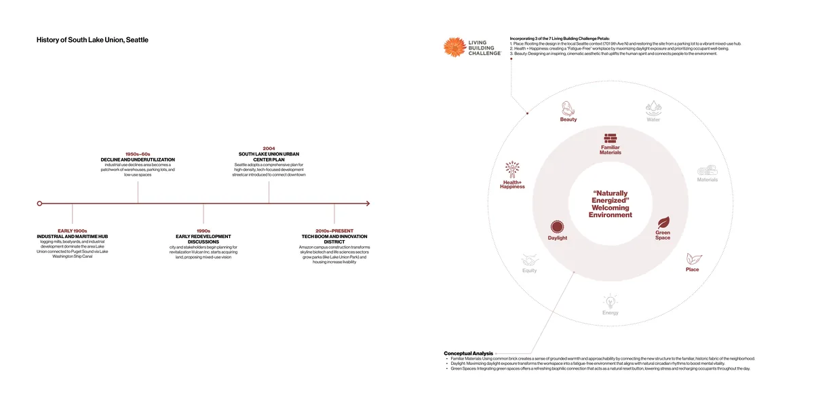
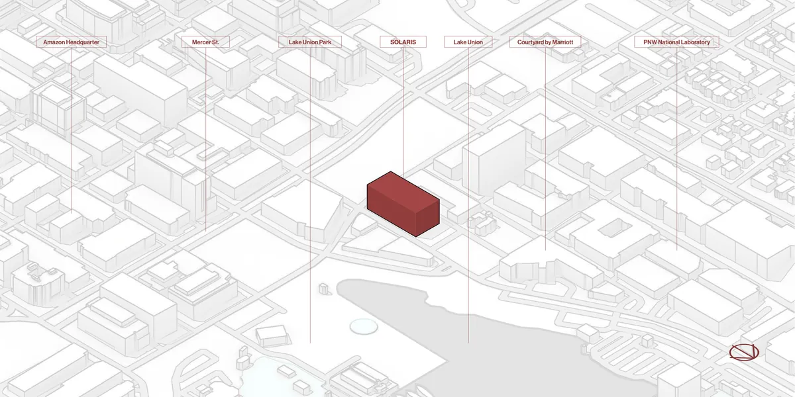
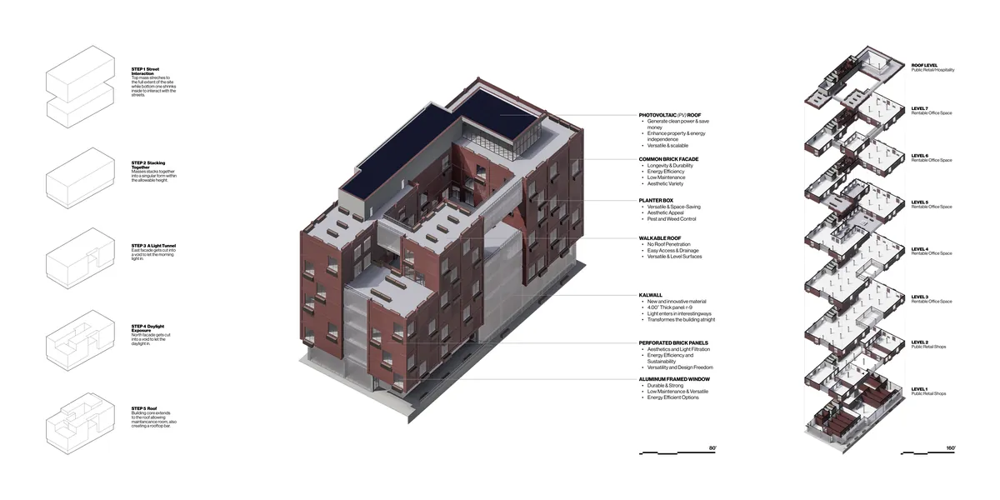
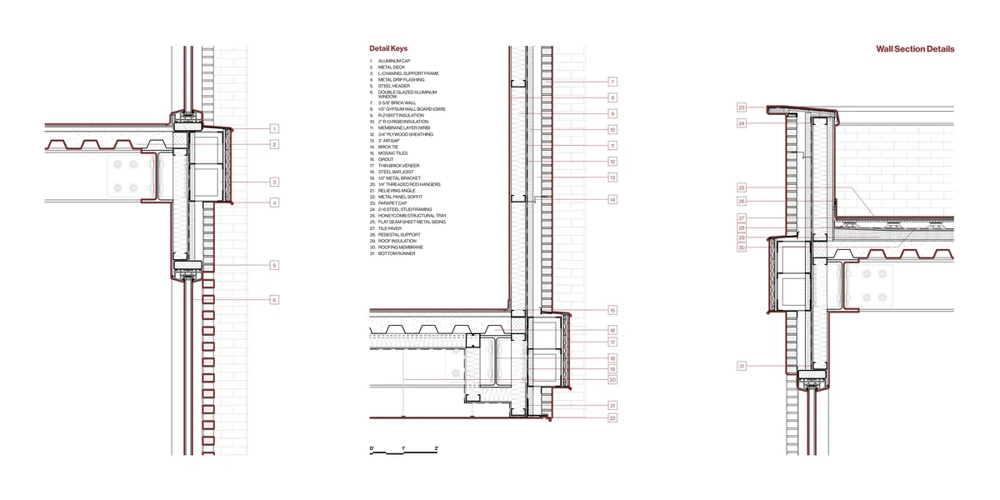
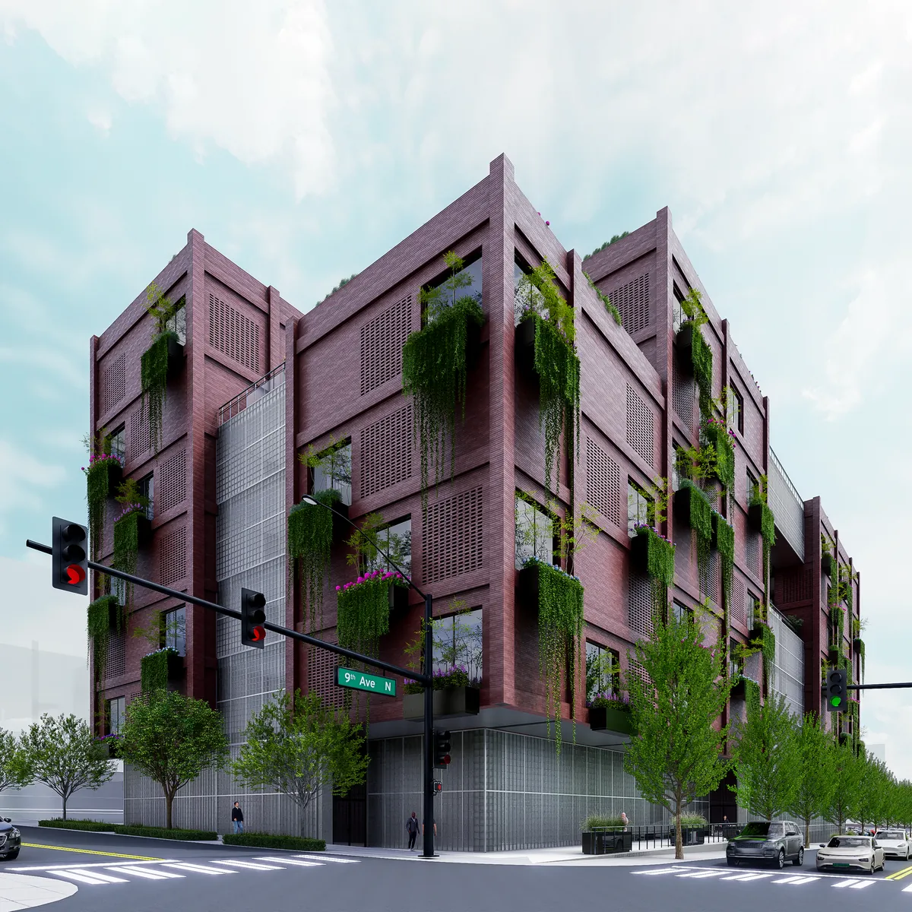
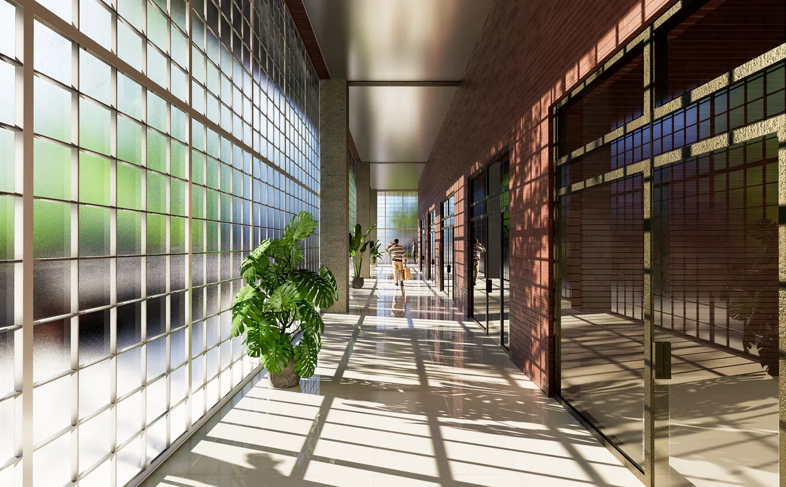

03 / 05
Solaris
Fueled by daylight: the fatigue-free workplace
Solaris turns a South Lake Union parking lot at 701 9th Ave N into a daylight-driven office and retail building. Work-related fatigue is widespread among US office workers, so the design treats daylight as the main tool for a healthier workplace.
Two light cuts pull morning and north light deep into the floor plates. Common brick ties the building to the neighborhood's historic fabric, and a base of translucent Kalwall panels turns the retail level into a glowing lantern at night.
Context
From maritime industry to today's tech and life-science district, South Lake Union's history shapes the building's material choice and its public ground floor.


Form and materials
The upper mass spans the full site while the base pulls in to meet the street. A light tunnel on the east and a void on the north bring daylight in, and the core rises to a rooftop bar.

Envelope detail
Wall sections resolve the brick veneer with relieving angles and brick ties, rigid and batt insulation, the Kalwall base and a walkable pedestal roof.

Views

